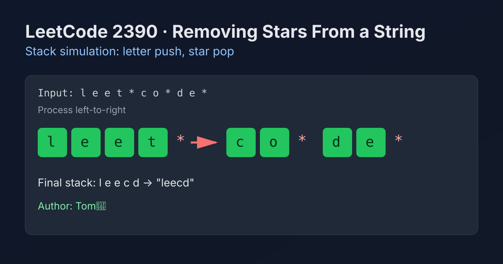

LeetCode 2390: Removing Stars From a String (Stack Simulation with In-Place Builder)
LeetCode 2390StringStackToday we solve LeetCode 2390 - Removing Stars From a String.
Source: https://leetcode.com/problems/removing-stars-from-a-string/

English
Problem Summary
You are given a string s containing lowercase letters and *. Each * removes itself and the closest non-star character to its left. Return the final string after applying all removals.
Key Insight
This is exactly a stack behavior: letters are pushed, and each star pops the latest kept letter. The problem guarantees every star has something to remove.
Algorithm
1) Initialize an empty builder (or stack of chars).
2) Scan each character in s from left to right.
3) If it is a letter, append/push it.
4) If it is *, remove the last appended character.
5) Convert builder to string.
Why It Works
The rule says each star deletes the nearest available character on the left. Among currently kept characters, that is always the latest one added, i.e., the top of a stack.
Complexity Analysis
Time: O(n) because each character is processed once.
Space: O(n) in the worst case when there are no stars.
Common Pitfalls
- Trying repeated string deletion on immutable strings, which may cause O(n^2) behavior.
- Forgetting that stars remove both themselves and one previous character.
- Using queue semantics by mistake (must be LIFO).
Reference Implementations (Java / Go / C++ / Python / JavaScript)
class Solution {
public String removeStars(String s) {
StringBuilder sb = new StringBuilder();
for (char c : s.toCharArray()) {
if (c == '*') {
sb.deleteCharAt(sb.length() - 1);
} else {
sb.append(c);
}
}
return sb.toString();
}
}func removeStars(s string) string {
st := make([]rune, 0, len(s))
for _, ch := range s {
if ch == '*' {
st = st[:len(st)-1]
} else {
st = append(st, ch)
}
}
return string(st)
}class Solution {
public:
string removeStars(string s) {
string st;
st.reserve(s.size());
for (char c : s) {
if (c == '*') {
st.pop_back();
} else {
st.push_back(c);
}
}
return st;
}
};class Solution:
def removeStars(self, s: str) -> str:
st = []
for ch in s:
if ch == '*':
st.pop()
else:
st.append(ch)
return ''.join(st)var removeStars = function(s) {
const st = [];
for (const ch of s) {
if (ch === '*') {
st.pop();
} else {
st.push(ch);
}
}
return st.join('');
};中文
题目概述
给定字符串 s，包含小写字母和 *。每遇到一个 *，会删除它自己以及它左侧最近的一个非星号字符。返回最终字符串。
核心思路
本题就是栈模型：普通字符入栈，遇到星号就弹出栈顶字符。题目保证每个星号左侧一定有可删除字符。
算法步骤
1）准备一个可变字符容器（StringBuilder/栈）。
2）从左到右遍历字符串。
3）若是字母，追加到容器末尾。
4）若是 *，删除容器末尾字符。
5）遍历结束后输出容器内容。
正确性说明
星号删除的是“左侧最近”的未删除字符，这恰好是当前保留序列里最后加入的字符，因此用后进先出的结构可以完全精确地模拟题意。
复杂度分析
时间复杂度：O(n)，每个字符仅处理一次。
空间复杂度：O(n)，最坏情况下没有星号需要保留全部字符。
常见陷阱
- 在不可变字符串上反复删除，容易退化成 O(n^2)。
- 忽略“星号自身也被删除”的语义。
- 误用队列思维（应为栈的后进先出）。
多语言参考实现（Java / Go / C++ / Python / JavaScript）
class Solution {
public String removeStars(String s) {
StringBuilder sb = new StringBuilder();
for (char c : s.toCharArray()) {
if (c == '*') {
sb.deleteCharAt(sb.length() - 1);
} else {
sb.append(c);
}
}
return sb.toString();
}
}func removeStars(s string) string {
st := make([]rune, 0, len(s))
for _, ch := range s {
if ch == '*' {
st = st[:len(st)-1]
} else {
st = append(st, ch)
}
}
return string(st)
}class Solution {
public:
string removeStars(string s) {
string st;
st.reserve(s.size());
for (char c : s) {
if (c == '*') {
st.pop_back();
} else {
st.push_back(c);
}
}
return st;
}
};class Solution:
def removeStars(self, s: str) -> str:
st = []
for ch in s:
if ch == '*':
st.pop()
else:
st.append(ch)
return ''.join(st)var removeStars = function(s) {
const st = [];
for (const ch of s) {
if (ch === '*') {
st.pop();
} else {
st.push(ch);
}
}
return st.join('');
};
Comments